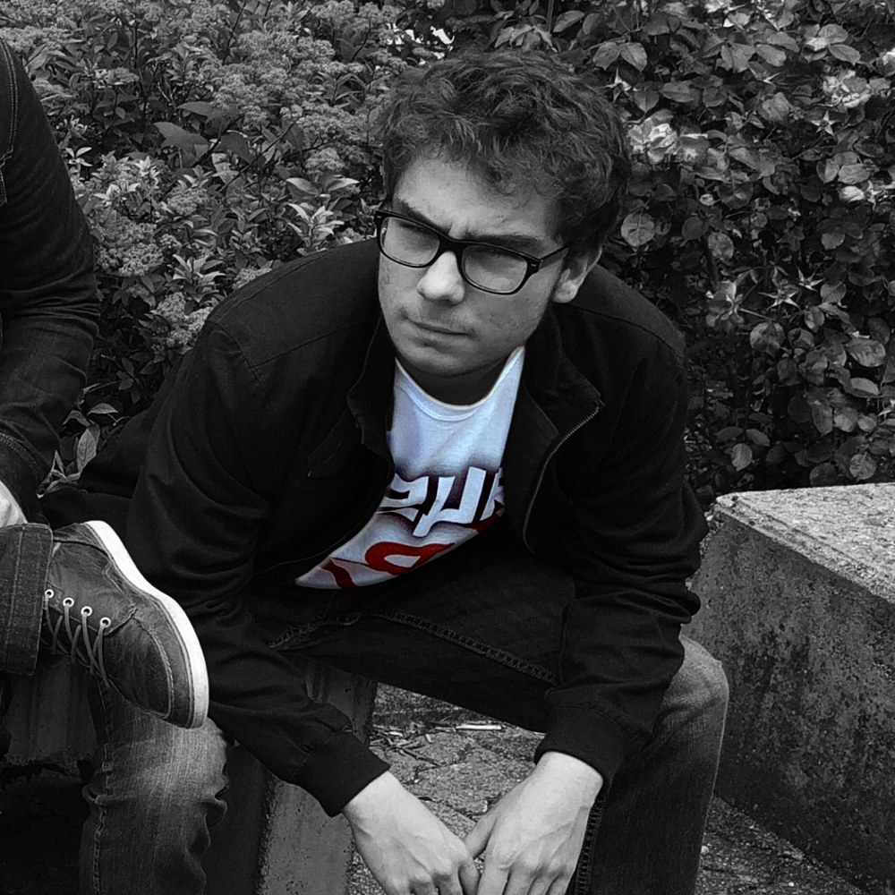

|  |
"Chaque coup vous sera renvoyé avec une précision chirugical."La tourVincent Skrzypniak, est un fin stratège. Il prévoit chacun de vos coups avec précision, sa finesse d'analyse ne laisse pas pour autant la force brute de coté. Connu pour finir le Championnat Européen (2017) de Company of Heroes 2 en quelques dizaines de minutes, il dirige ses troupes avec rapidité et précision. Il est capable d'analyser tout en donnant des ordres à ses alliès, sans conteste le leader naturel de toutes les équipes dans lequel il a joué. L'année 2017 est la meilleure année de Twenty-Cent, ses résultats sur Player's Unknown : Battleground l'a propulsé sur le devant de la scène. |
Récompenses
|
Spécialités
|